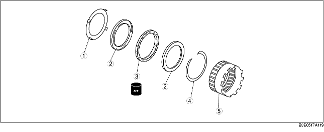

1. Die Vorprüfung vor dem Zerlegen durchführen.
(Siehe Vorderes Hohlrad und Freilaufgruppe.)
2. Die Zerlegung in der Reihenfolge der Tabelle durchführen.
3. Der Zusammenbau erfolgt in umgekehrter Reihenfolge der Zerlegung.

|
1
|
Freilaufsitz
(Siehe Zerlegungshinweis für Freilaufsitz.)
|
|
2
|
Seitenlaufring
|
|
3
|
Freilauf
|
|
4
|
Sicherungsring
|
|
5
|
Vorderes Hohlrad
|
• Mit einem Schlitzschraubendreher wie abgebildet den Freilaufsitz entfernen.
1. Den Sicherungsring montieren.
2. Den Freilauf wie abgebildet in Richtung des Pfeils (auf dem Freilauf) auf das vordere Hohlrad aufsetzen.
3. Den Seitenlaufring aufsetzen.
4. Den Freilaufsitz einbauen.